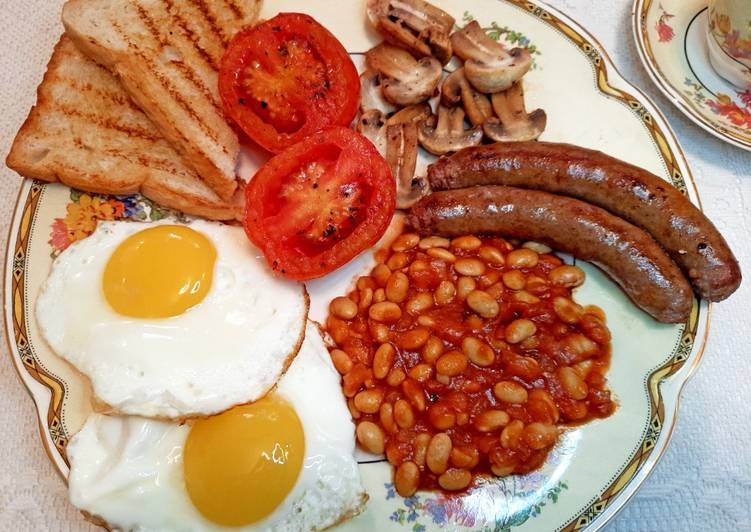

English Breakfast

A food originating from England, the English Breakfast offers as much good taste as its country of origin does. Often criticized for being gross, the criticizers just need to try a bite or two before judging!
- The ingredients
- Something to cook with
- Vomit bucket (just in case)
- Put the stuff together
- Do the baking and cooking
- Try a bite (use the vomit bucket when needed)